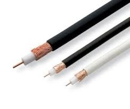
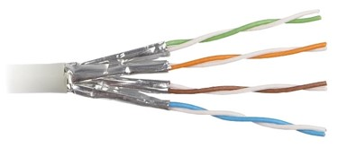
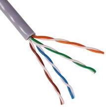
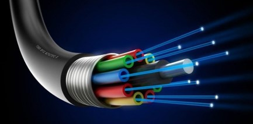
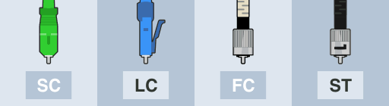

Los medios de transmisión guiados están constituidos por cables que se encargan de la conducción (o guiado) de las señales desde un extremo al otro.
A continuacion se muestran algunos tipos de medios de trasmision guiados
Cable Coaxial
Tipos
A pesar de que hay más de una docena de tipos de cables coaxiales, tan solo tres se utilizan en la actualidad y son los que vamos a ver a continuación
RG59: es el más delgado, y por ello el más maleable. Es ideal para circuitos cerrados de TV (CCTV), pero su ancho de banda no permite transmisión de vídeo en alta definición. Solo soporta unas decenas de metros antes de que la señal se comience a degradar.
RG6: es el más conocido y extendido, pues es el tipo que se utiliza para la televisión en alta definición. Soporta una distancia de hasta 600 metros sin pérdida de señal.
RG11: es el mejor de todos y también el más caro, y soporta longitudes de hasta 1.100 metros.
El precio de cable coaxial RG6 va de 30 pesos el metros y un rollo va desde $900 hasta los $1100
Usos mas comunes
Generalmente para conectar la toma de antena a la TV. También se utilizan mucho en sistemas de CCTV (y aquí puede entrar un PC) y audio profesional, así como para transmitir incluso potencia eléctrica sin datos.
Ventajas:
Desventajas:

Par trenzado
Cable de par trenzado blindado (STP) Cable de par trenzado sin blindaje (UTP)

Tipos de cable par trenzado
UTP acrónimo de Unshielded Twisted Pair o Cable trenzado sin apantallar: Son cables de pares trenzados sin apantallar que se utilizan para diferentes tecnologías de red local. Son de bajo costo y de fácil uso, pero producen más errores que otros tipos de cable y tienen limitaciones para trabajar a grandes distancias sin regeneración de la señal.
STP, acrónimo de Shielded Twisted Pair o Par trenzado apantallado: Se trata de cables de cobre aislados dentro de una cubierta protectora, con un número específico de trenzas por pie. STP se refiere a la cantidad de aislamiento alrededor de un conjunto de cables y, por lo tanto, a su inmunidad al ruido. Se utiliza en redes de ordenadores como Ethernet o Token Ring. Es más caro que la versión no apantallada o UTP.
FTP, acrónimo de Foiled Twisted Pair o Par trenzado con pantalla global.
Tipos de Conectores para Cable Par Trenzado
RJ-45 es una interfaz física comúnmente utilizada para conectar redes de computadoras con cableado estructurado (categorías 4, 5, 5e, 6 y 6a). Posee ocho pines o conexiones eléctricas, que normalmente se usan como extremos de cables de par trenzado (UTP).
Distancia del cable par trenzado
La longitud máxima de los cables de par trenzado están limitadas a 90 metros, ya sea para 10 o 100 Mbps.
Precio :100 metros de cable a $480
Uso
Es un medio de conexión usado en telecomunicaciones en el que dos conductores eléctricos aislados son entrelazados para anular las interferencias de fuentes externas y diafonía de los cables adyacentes. Fue inventado por Alexander Graham Bell.
ventajas
Desventajas
Fibra óptica
Costo: En mercado libre en metro esta 95 pesos
Uso
Es un medio físico de transmisión de información, usual en redes de datos y telecomunicaciones, que consiste en un filamento delgado de vidrio o de plástico, a través del cual viajan pulsos de luz láser o led, en la cual se contienen los datos a transmitir.

Tipos de fibra óptica
Monomodo
Son enfocadas en la transmisión de datos a mayores distancias. Su núcleo óptico es pequeño, por lo que la luz recorre el cable en un solo rayo. Al ser sólo un haz de luz, la señal puede viajar más rápido, más lejos y con menos debilitamiento.
Multimodo
A diferencia de una fibra monomodo, una multimodo tiene la capacidad de transmitir múltiples rayos de luz. Debido a un núcleo de mayor diámetro, la luz se refleja en distintos ángulos.
Conectores para fibra óptica

Distancia
La distancia máxima de transmisión de la fibra monomodo OS1 es de 2 km, pero la distancia máxima de transmisión de la fibra monomodo OS2 puede alcanzar 5 m / s. km y es de hasta 10 km
Ventajas
Desventajas
Si quieres sabe mas sobre medios de trasmision guiados ve este video